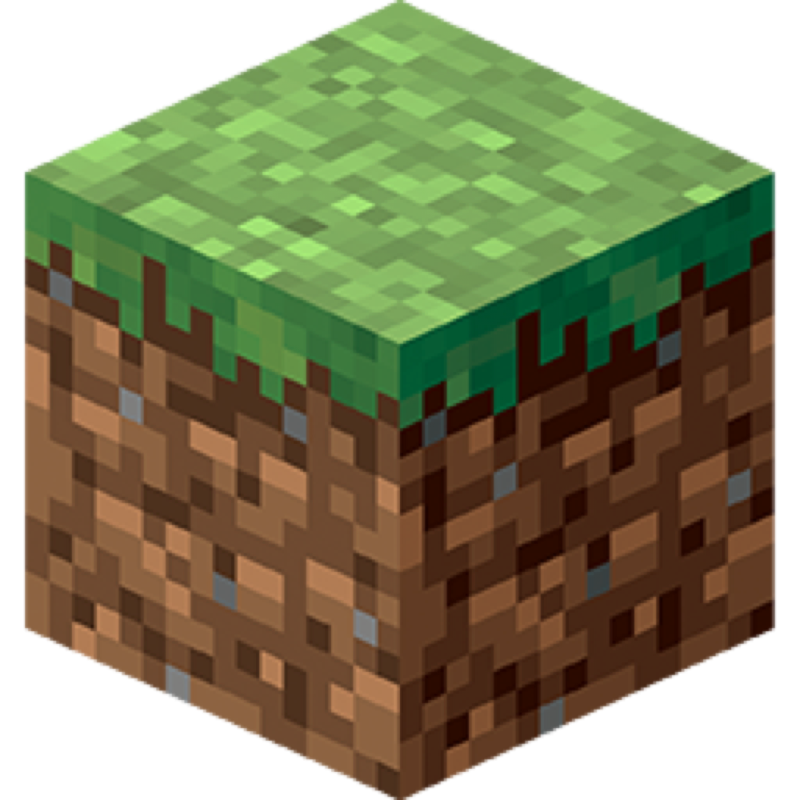
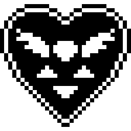

Geometry Dash is an addictive rhythm-based action platformer developed by RobTop Games. In this game, players control a geometric cube and navigate through increasingly challenging obstacle courses, all while syncing their movements to energetic electronic soundtracks. The game features 26 official levels, each with unique designs and music, and includes a built-in level editor for players to create and share their own levels. Geometry Dash has gained a massive global community, with over 100 million players, and is known for its precision timing and musical synchronization mechanics.
Minecraft is a 3D sandbox video game that allows players to explore, build, and survive in a block-based world with virtually limitless possibilities.


Geometry Dash is an addictive rhythm-based action platformer developed by RobTop Games. In this game, players control a geometric cube and navigate through increasingly challenging obstacle courses, all while syncing their movements to energetic electronic soundtracks. The game features 26 official levels, each with unique designs and music, and includes a built-in level editor for players to create and share their own levels. Geometry Dash has gained a massive global community, with over 100 million players, and is known for its precision timing and musical synchronization mechanics.